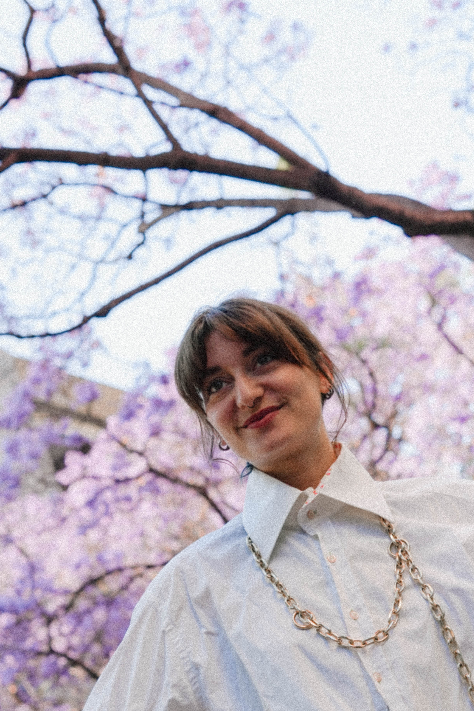
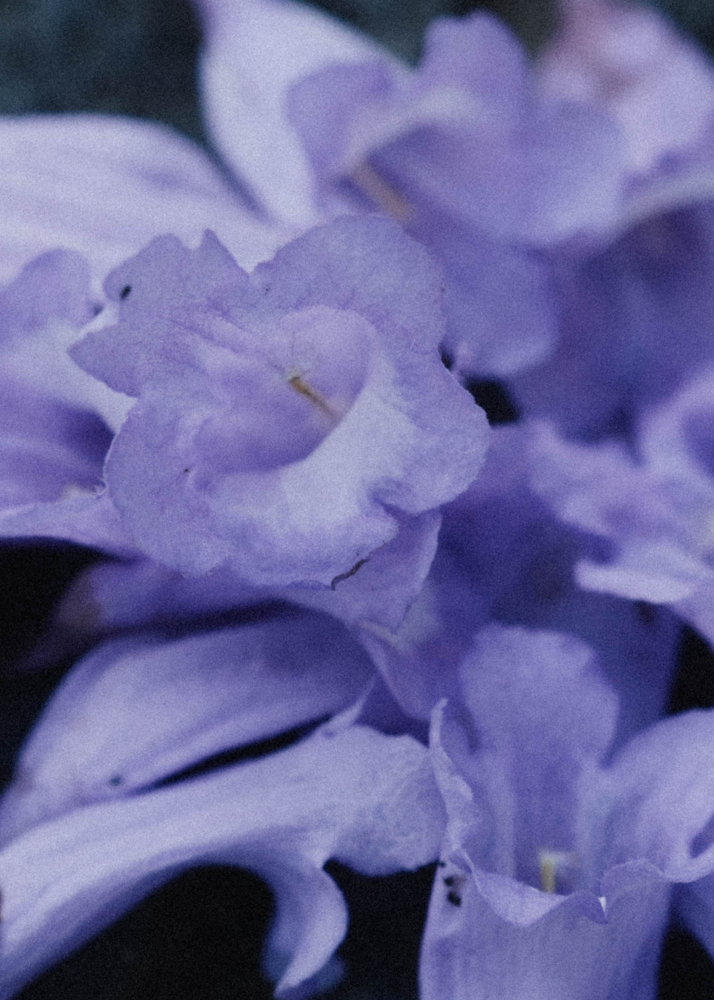

Painter — Barcelona
I am a French-Lebanese painter, raised in Paris between two cultures, with art being part of everyday life from the beginning.
Drawn early to the luminous vision of Monet and the pioneering geometric compositions of Kupka, I found in abstraction a language that felt close to thought.
My paintings follow the rhythm of reflections. The way a feeling surfaces before it has a name, the way structure and chaos negotiate in real time. Geometric yet organic, they map the mind in motion: ideas as they arrive, as they settle into form. Nature is always present underneath, in the curve of a line, in the breath between shapes.
To me, painting is an act of both listening and expression.
Selected shows
